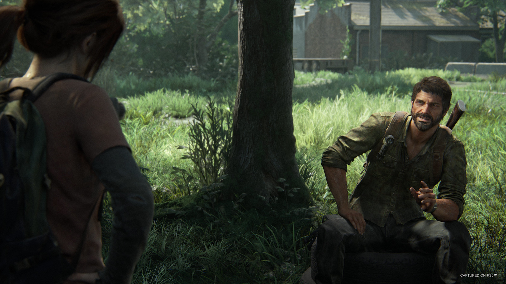
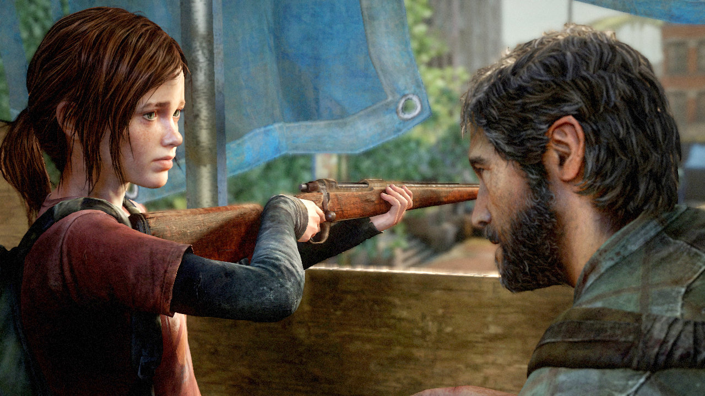

The Last of Us Part I
Uma jornada brutal de sobrevivência e esperança
A Obra-Prima da Naughty Dog
The Last of Us é um jogo aclamado pela crítica, conhecido por sua narrativa profunda e emocional. Lançado originalmente em 2013, o jogo se tornou um marco na indústria dos games, e sua história continua a ser relevante e impactante.
A História de Joel e Ellie
Em um mundo pós-apocalíptico, assolado por uma infecção fúngica que transforma humanos em monstros, a vida de Joel, um contrabandista endurecido, muda para sempre ao conhecer Ellie, uma jovem de 14 anos com um segredo que pode mudar o destino da humanidade. Sua jornada por um EUA devastado é uma luta constante pela sobrevivência e um relato sobre o laço humano em meio à desolação.
